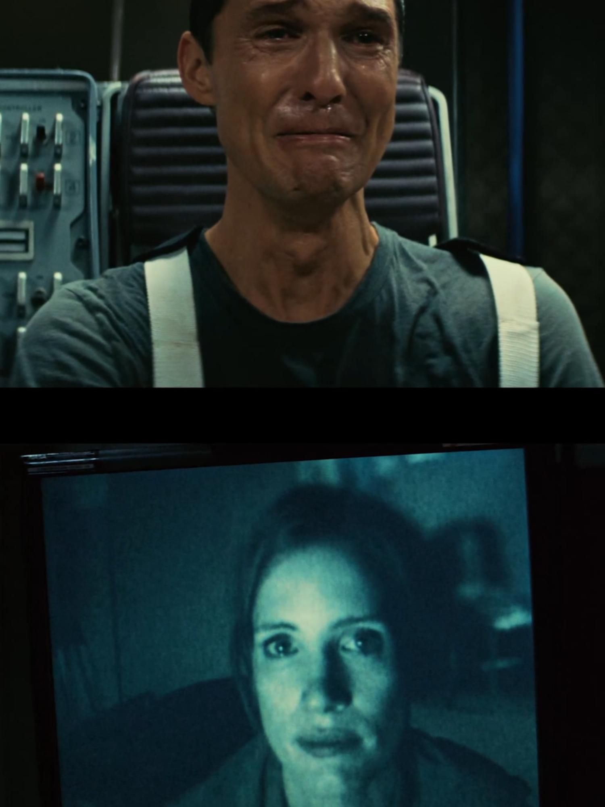
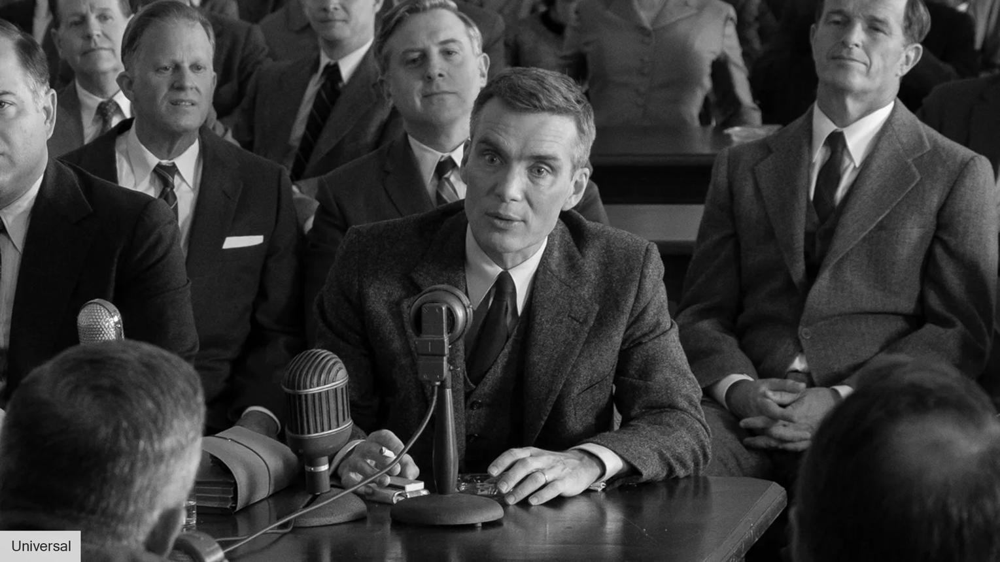
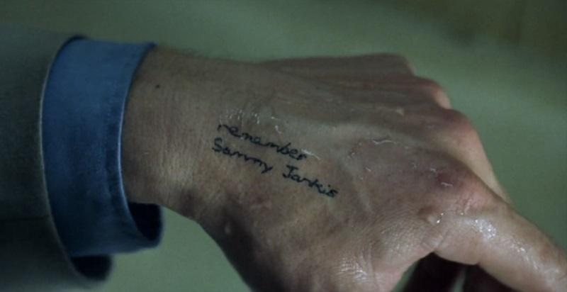

Seth Trudell-Noom
Eng 102
Prof. Koegel
13 May 2026
Christopher Nolan: Boundless Throughout Time
Counting is an order. The majority of movies follow some form of chronological order. However, Christopher Nolan does the opposite; he uses time as a storytelling device. One that isn’t in some simple order and doesn’t just act as a catalyst for continuity.
Interstellar is one of, if not the most, notable films by Christopher Nolan. It is a film that follows that concept to a T. In this movie, time is extremely important to both the characters and us. Our main character travels to a planet where every hour he spends there is 7 years on Earth. Since its release in 2014, and the writing of this blog, 12 years later, it has been about one hour and 38 minutes. That goes to show just how much of an effect this has on the film's scope of time. The main character is stuck there until he completes his tasks, knowing he will outlive his children and possibly generations after. And we, as viewers, have to break that down and keep that noted in our minds as we watch.
Cooper, our main character, is that experience. Specifically, a scene we get to experience with him is where he is watching the messages given to him. Ones that are both technically from the past and future. His kids grow older, and yet Cooper hasn’t aged one bit. And of course, Cooper snaps. He breaks. He realises this task is what will kill him, whether it be physically or mentally. This representation of time creates a split. One of the past, and one of the present. And it isn’t explainable without diving into quantum physics, FTLs, and the 4th dimension, but in hindsight, Cooper is omnipresent, and technically, omnipotent. He is tampering with his daughter's room because it acts as a catalyst for his communication with both the past, present, and future.

This is terrifying. Mr Nolan knows that well. Having worked closely with Theoretical Physicist, Kip Thorne, to understand all of the theoretical science for this. This created a masterful craft depicting the horrors of time and how its concept can reshape stories from a simple linear graph to logarithmic functions that force us as viewers to sit down and actively take in all of the science that plays into that. Which is heavily emotional. Cooper is watching his family die before he even ages a week older. Only to return at his daughter's deathbed. Cooper made the promise to her that he would return when she was his age; she then doubled that before he even entered the atmosphere.
Yet, in Oppenheimer, the man who states, “Now I am become death, the destroyer of worlds.” A quote where he recognises that not only has he destroyed his own world, but everyone else's. Cooper gets the luxury of saving humanity. While Oppenheimer wipes what he knows and holds, clean off the earth. And he sees this.
Throughout the movie, he has various thoughts, which, granted, a genius who is creating what could be the end of all of humanity's genius would think a lot. And these thoughts are depicted in black and white. An ode to older films being in black and white, and as a way for us as viewers to recognise that we are jumping in both his mind and time. But we also see how it plays into his perspective on the truth. We see what he believes to be the correct way to do things, scientifically and morally.

There is a common term, “Thinking in black and white.” Meaning there is a clear distinction between things, and for Oppenheimer, those distinctions are his values. He makes it clear where he stands on the scale of morality, and it's ironically a grey area. But we also see that as things become more developed and the bomb becomes closer to completion, there's a lot more grey in his thoughts. Not visually, but in memory. He questions himself and everyone around him. Simply, “Is this right?” And Nolan had a purpose for that. Because it then forced us to ask the same question about the movie, “Is this right?” We were automatically seated in Oppenheimer's mind and forced to think with him. We became his thoughts. Breaking down the truths and perspectives we see with him, to form a collective opinion. And just like his internal thoughts, we as viewers had clashing conclusions as well. Without us realising, Nolan cast us as characters in a movie we were watching.
In Memento, we don’t see things in that forward motion; however, we see them backwards. From the bullet's shell hitting the ground to the victim screaming for the killer to wait. Everything is in reverse. This confused a lot of viewers initially in theatres. But it also forced us to think about and replay what happened. In other words, Memento. This opening scene alone is a perfect play into the movie and shows beautifully how chronological order means nothing in a movie where time plays its biggest role.
Another key piece of Memento is how it plays into the loss of time. Our main character, Leonard, is unable to remember things for more than a few minutes after some trauma regarding the murder of his wife. So in order to survive, he creates a system. Tattoos act as facts, Polaroid pictures are for people, and handwritten notes are for clues. However, Leonard completely trusts this system, even if it may be incomplete or manipulated. Whether that be through emotional bias or some external party.

We experience this with him. He wakes up, knowing nobody, or even where he is. This automatically puts both him and us in a distrusting position. And the cameras show that, focusing only on him and/or his photographs. His system.
Mr Nolan does this on purpose. Feeding us very little information and then throwing us into a high-tension moment where we haven’t the slightest idea as to what is going on or who we are. Scenes move backwards, making us constantly feel disoriented and dazed by what we are comprehending. All of which is to put us into the seat of Leonard, and in his sense of time.
Yet, in the end. We find out he was manipulating himself all along. It wasn’t some external party or some long-term chase. It was him. This nonlinear storytelling from Mr Nolan shows just how much detail goes into the order of his films and how easily they can be manipulated by simple, trustworthy statements. It doesn’t need some extreme theory.
Christopher Nolan is a master at manipulating time. Using it as a catalyst for filmmaking that is unmatched. Through interstellar travel, he uses time as a physical capsule and a means of continuation. In Oppenheimer, as a piece of what's lost, and remembrance. And in Memento, as a clue given to us that we never saw. All of which immersed and made us constantly have their differences at the back of our mind. Forcing us to comprehend the fact that it isn’t a linear flow, it is manipulated and changing.
Many directors have techniques that are their craft. Whether it be specific camera angles that force you to live in their choice of perspective, or specific acting that makes the characters pop just a small bit more, or even just colour that makes the film's overall mood change drastically. Yet all of them are simplistic characteristics of what makes film. Christopher Nolan thought outside the box, or rather, outside of time. He utilises it as a way to shape how we are immersed by his films and what pieces he can move around to make something anew, not blend what we are already given. Making his films boundless throughout time.